Death Valley 2019
March 2019
We camped at Texas Springs campground the first 2 nights. On our first night, with 45 mph valley winds and rattlesnake scare, we ended up in our car. The wind destoryed our neighbor Jonas' tent, but he somehow jury-rigged it back together. 2nd night was much calmer.
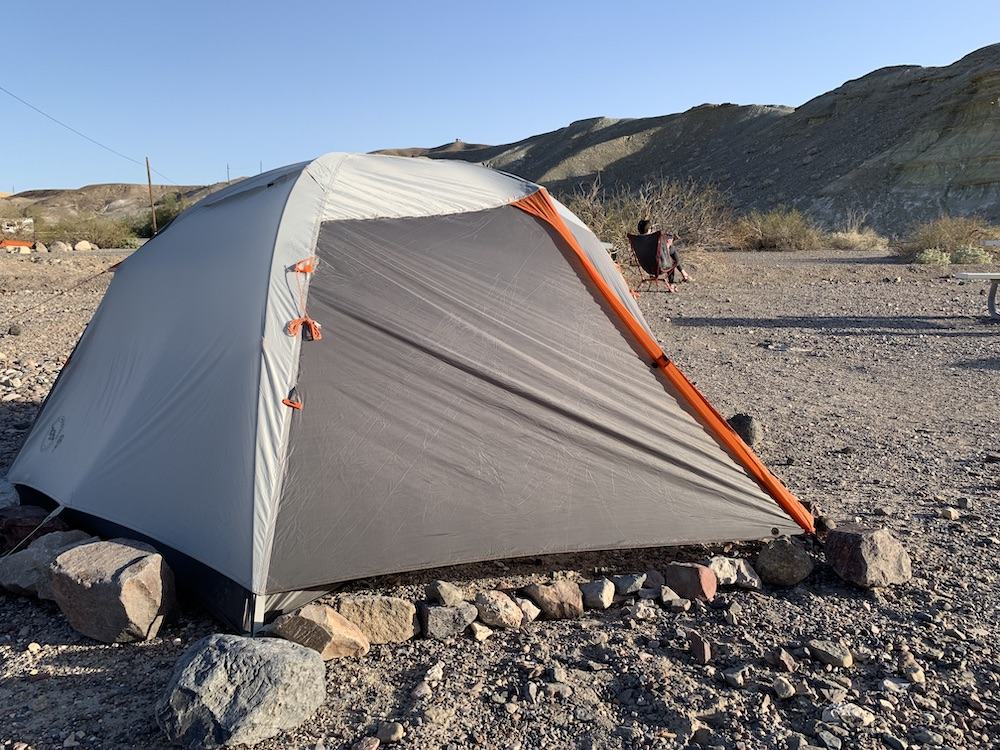
First hike in death valley: Zabriskie Point, overlooks the black mountains.
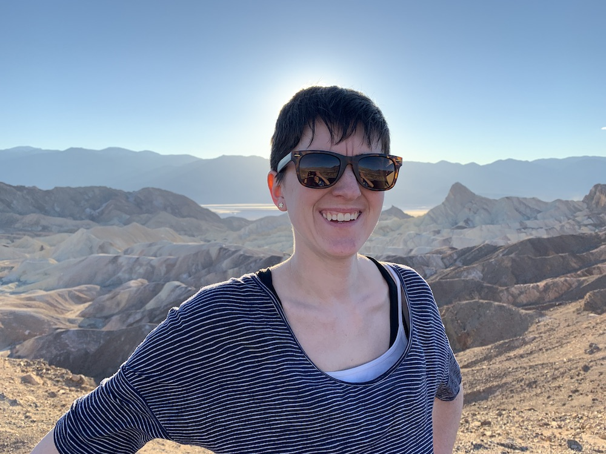
Texas Springs campsite had a small hill which overlooked Furnace Creek -- basically an oasis in the desert. It also happens to have the greatest $30 buffet ever (but also the only place to get food within 50 miles).
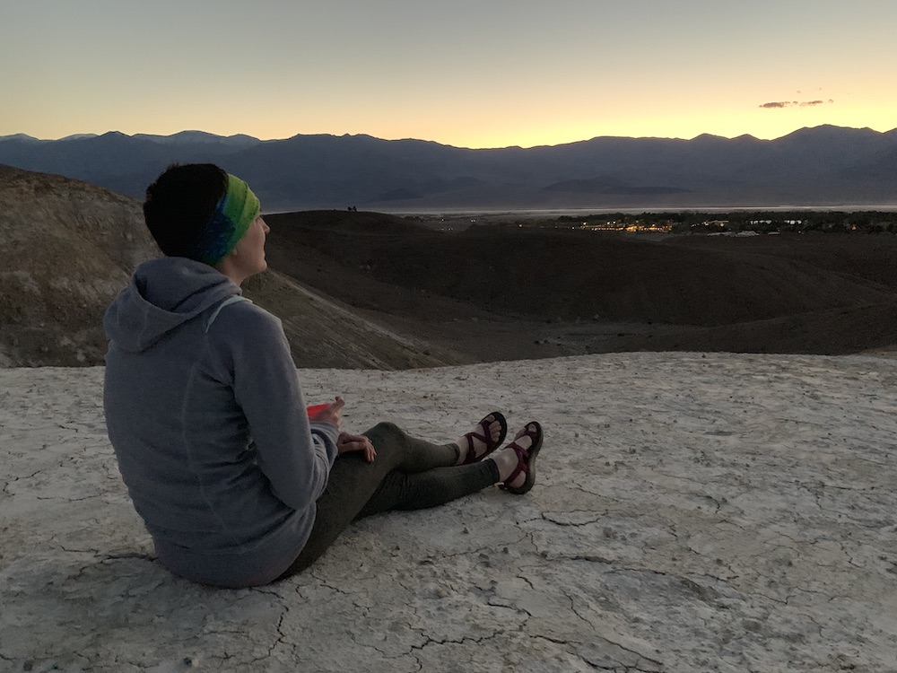
First hike on day 2 was up Desolate Canyon. It truly was Desolate -- we didn't encounter a single person here. The rocks here are really crazy colored.
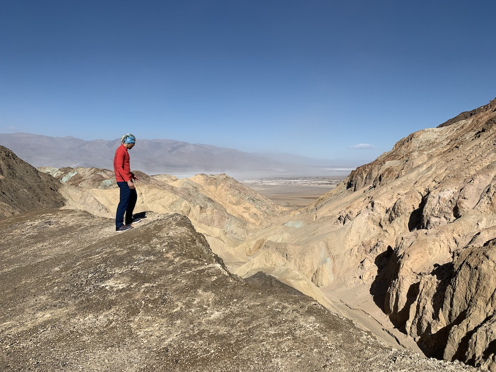
Then we made it down the hottest place on earth (in the summer) and the lowest point in the Western Hemisphere -- Badwater Basin. It looked like an alien planet. I tasted the salt -- confirmed salty. Somehow yet, there's a species of mollusk that lives here.
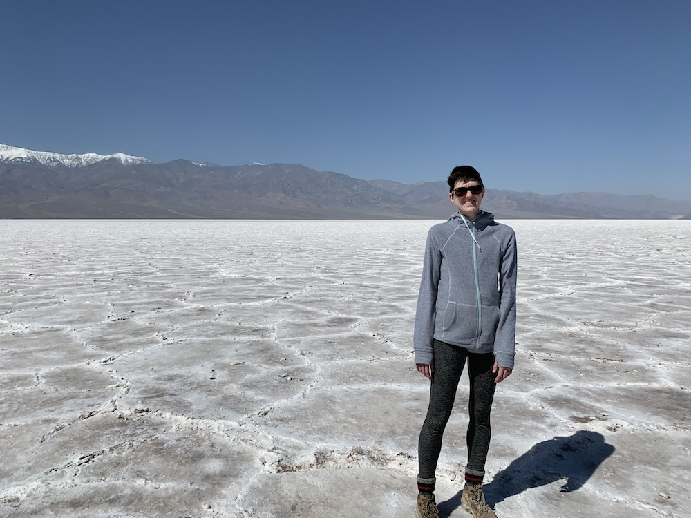
Salt creek is the home to a species of salt water pup-fish. Even in a desolate desert, with water 10 times as briney as the ocean, there's some waterfowl.
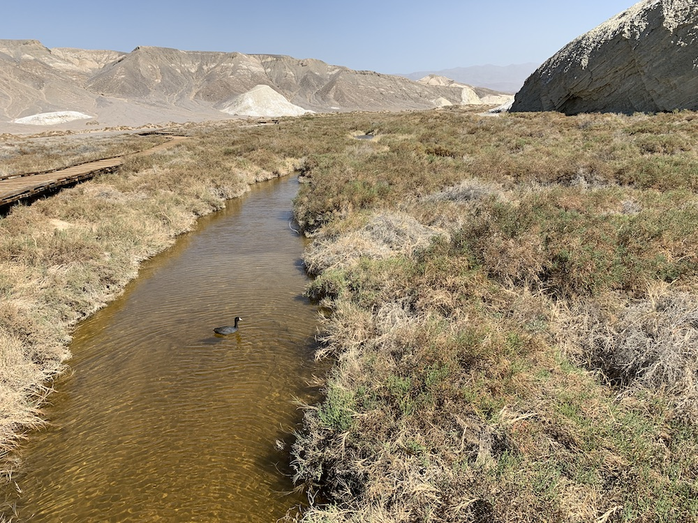
Day 3: we started the day driving down the wrong road and ended up in the dunes.
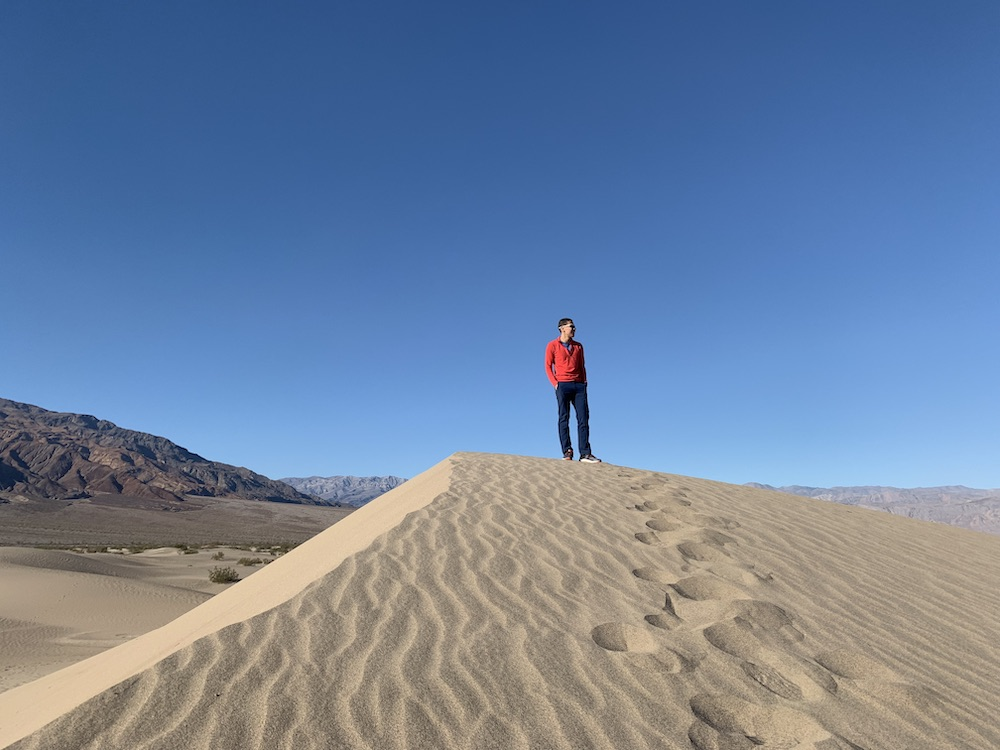
2 hours later, we finally arrived at Ubehebe Crater. Most of the crater was made up of loose gravel which made it a annoying hike. We went around the rim and I sprinted down and up the crater while Dana did some reading.
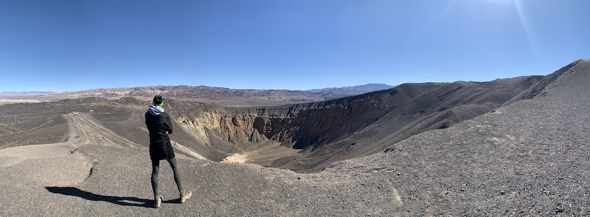
Exiting death valley on Day 4, we drove by Beaty, NV (A real craphole) and stayed in Pahrump, NV (Poor-man's Vegas). This area is home to a large number of wild burros. I suspect that this place is so strange because it's right next to the Yucca Mountain nuclear waste repository -- or perhaps because they tested a large number of nuclear weapons here -- or perhaps these are aliens that just leaked from Area 51.
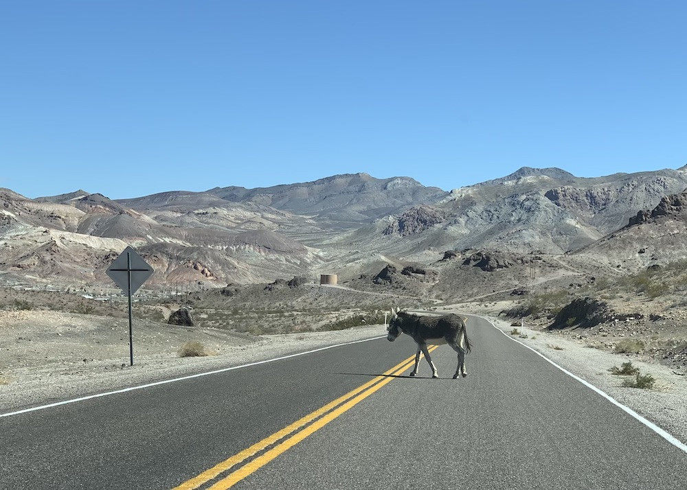
Coming out of death valley, we hiked Red Rock Canyon National Conservation Area. It was really crowded because apparently "it's climbing season." We couldn't get a campsite and felt pretty demotivated. Still, we climbed up a bunch of Red Rocks and saw a 12 year old throw a tantrum on the cliffs.
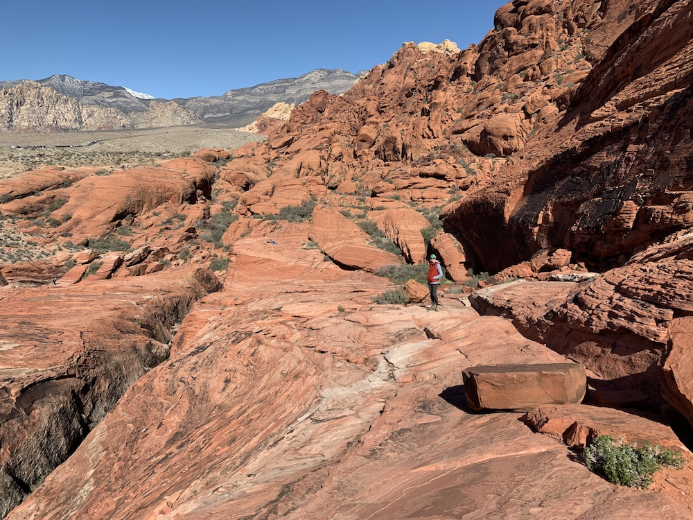
We were so discouraged from Pahrump that we almost flew home that night. Fortunately, the flight was full. So instead of staying in Vegas, we decided to risk it and drive towards Arizona and Lake Mead; we luckily found a beautiful camp site at Boulder Beach, Lake Mead.
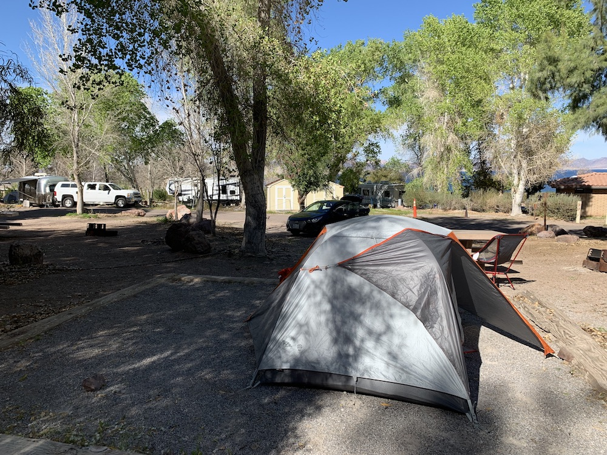
Since we were here -- we went to go check out Hoover Dam.
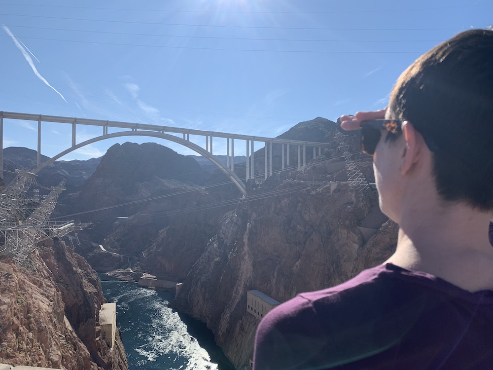
Lake Mead was a really nice campground ... Other than the part where there was a couple who kept arguing about their maritial issues until 1:30 am. The guy kept screaming "Stop abusing me." ... an hour later ... "National Park Police, Step out of your tent!"

End of the trip. Time to pick up the babies. Obligatory final plane picture: an Airbus A321 with sharklets on a dusk north-westerly approach to DTW.
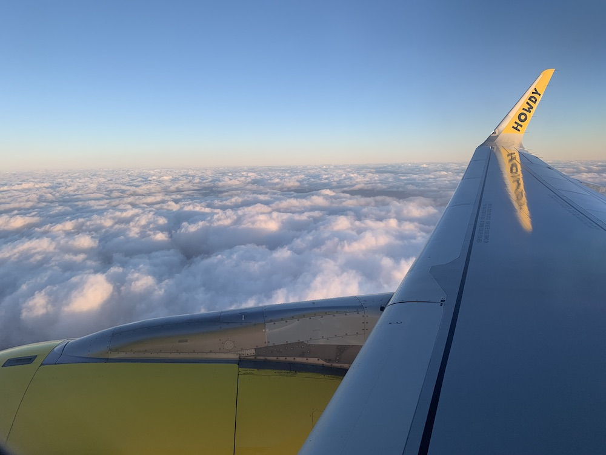